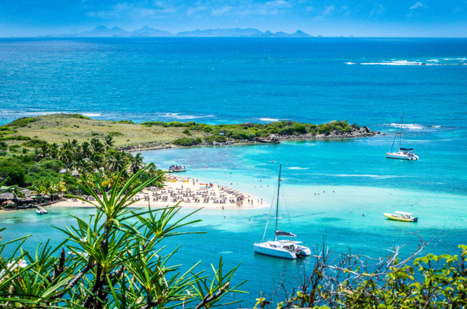
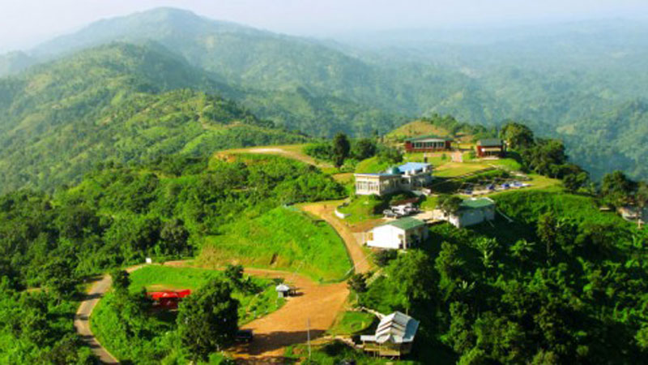

Best Natural Places in Bangladesh
Saint Martin Island
St. Martin Island- The only Coral Island of Bangladesh is located in the Bay of Bengal surrounded by huge black stone. The total area of this tiny island is only 14 km and 20km distance from the mainland of Shahpari Island on the southern tip of Teknaf. 1st settlement started just 250 years ago by some Arabian Sailors and named as ‘Zajira’. Subsequent the local settlers named as Narikel Jinjira. During British occupation the island was named as St. Martin Island. The characteristic of 12km long sandy sea beach is very pleasant having with gentle slope. Crystal clean water with rich biodiversity and unpolluted nature play the vital role to attract the tourists.
Chittagong Hill Tracts
The Chittagong Hill Tracts (CHT) in the south-eastern part of Bangladesh comprises a total area of 5,093 sq. miles (13,189 sq. km.) encompassing three hill districts: Rangamati, Khagrachari and Bandarban. It shares borders with Myanmar on the south and southeast, India on the north and northeast, and the Chittagong district of Bangladesh on the west. It is one of the most diverse regions in the country. Home to eleven indigenous ethnic groups, colectivelly known as the Jumma people, these indigenous groups are distinct from the majority Bengali people of Bangladesh in respect of race, language, culture, heritage, religion, political history, and economy. This ethnic and religious differences that separate the Jumma people of the rest of the Bangladeshi population has been a source of permanent conflict in the region. After an armed conflict that lasted more than 20 years, the signing of the 1997 "CHT Accord" was regaded as the cornerstone of a new period of peaceful coexistence between the inhabitants of the Chittagong Hills Tracts and Bangladesh.
Sylhet

Sylhet is a city in eastern Bangladesh, on the Surma River.It has many natural places to visit and research.You can know more about the places with following link.